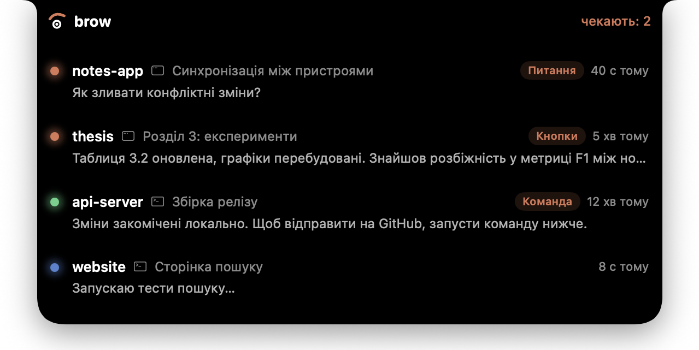
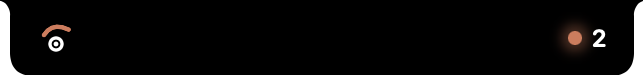
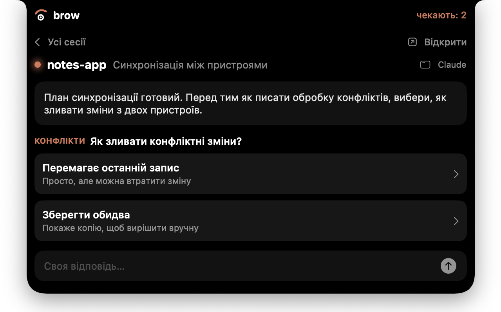
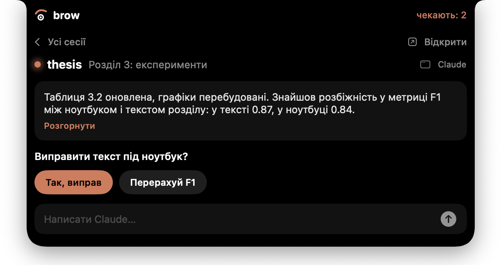
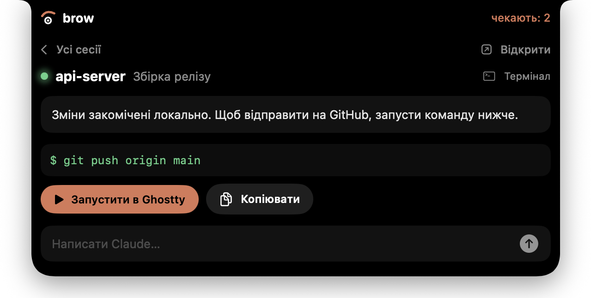
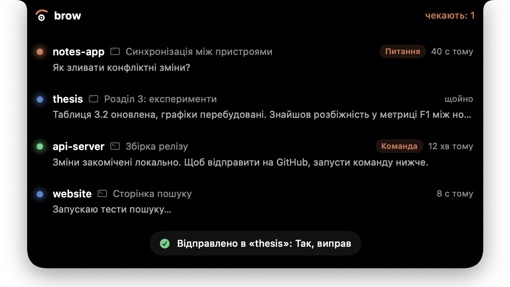

Сесії Claude — прямо в нотчі MacBook. Видно, хто з них закінчив, хто питає, і можна відповісти, не відкриваючи вікно.

Я тримаю одночасно кілька сесій Claude: у програмі Claude і в терміналі. Одна закінчила і пропонує команду, друга питає, як робити далі, третя ще працює. Щоб це побачити, треба по черзі перемикатися між вікнами.
brow ставить усе це в одне місце, яке завжди перед очима, — у нотч над екраном. Нотч сам каже, скільки сесій чекають, а розгорнувши його, можна одразу відповісти.
Проєкт, назва, стан і час. Програма Claude і термінал в одному списку.
Перший рядок у списку, повний текст — по кліку.
Пишеш у нотчі, Claude отримує це як звичайну відповідь і працює далі.
Кнопки, які Claude пропонує наприкінці відповіді, доступні прямо в нотчі.
Питання з варіантами: клік на варіант або своя відповідь.
Команда з повідомлення відкривається в новому вікні Ghostty. Тільки після натискання.





Claude Code вміє запускати невеликі програми на певних подіях — це «хуки». brow ставить один такий хук, і той передає події в нотч.
| Подія | Що з нею робить brow |
|---|---|
SessionStart / SessionEnd | додає або прибирає сесію зі списку |
UserPromptSubmit | сесія знову працює, старі кнопки зникають |
Stop | Claude закінчив: показати повідомлення, дати відповісти текстом чи кнопкою |
PreToolUse (wrap_up) | забирає кнопки, які програма Claude малює внизу відповіді |
PermissionRequest (питання) | показує питання з варіантами і повертає вибір |
PostToolUse (питання) | на питання вже відповіли в програмі — прибрати з нотча |
Щоб відповідь з нотча дійшла, хук має «притримати» Claude, поки ти відповідаєш. brow робить це, тільки коли вікна цієї сесії не видно, і відпускає, щойно ти повертаєшся в програму. Межа очікування — 10 хвилин.
| Питання | Результат |
|---|---|
| Чи бачить хук, що Claude написав наприкінці? | Так. Stop-хук отримує останнє повідомлення повністю. |
| Чи можна відповісти Claude ззовні? | Так. Хук чекає і повертає текст, Claude працює з ним далі. |
| Чи видно кнопки і питання? | Так. Хуки бачать і текст питання, і всі варіанти та кнопки. |
| Чи можна вибрати варіант з нотча? | Так. І варіант зі списку, і свій текст. |
| Що, як відповів у програмі раніше? | Безпечно. Виграє перша відповідь, друга ігнорується. |
~/.claude/settings.json, на всі проєкти.~/Library/Application Support/brow/.